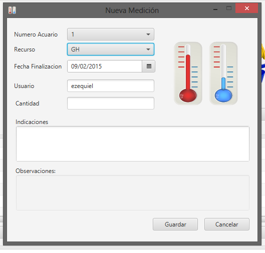

Desde la pantalla principal de PLANIFICACIÓN, ingresando en la opción de Agregar medición, se desplegará la siguiente pantalla:

Deberá seleccionarse el parámetro a medir, indicarse el número de acuario sobre el que se realizará la medición, la fecha y hora límites para la consecución de la tarea. Además optativamente, quien registre la nueva medición podrá brindar indicaciones previas para su correcta realización.
Una vez aceptada seleccionando ACEPTAR, la nueva medición estará incorporada en la planificación y podrá ser asentada posteriormente.
Created with the Personal Edition of HelpNDoc: Free Kindle producer